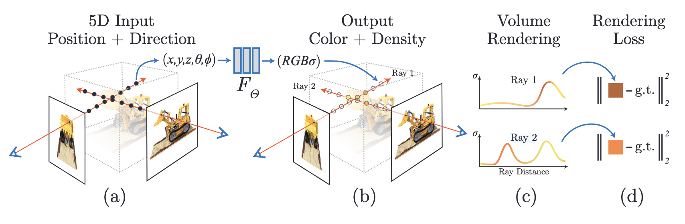
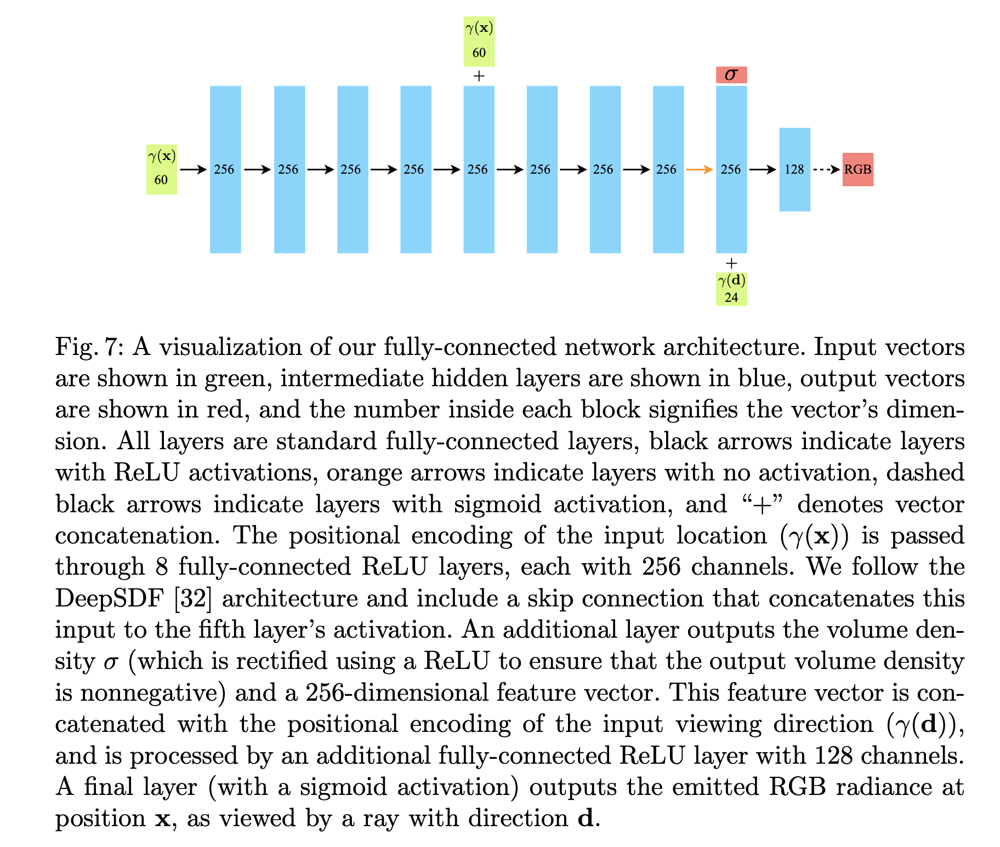

NeRF
Neural Radiance Fields (NeRF) represent a breakthrough approach to synthesizing novel views of complex 3D scenes from a sparse set of 2D images. Instead of using discrete representations like meshes or point clouds, NeRF encodes the geometry and appearance of a scene directly into the weights of a continuous, deep, fully connected neural network (a Multilayer Perceptron, or MLP).
Here is the mathematical breakdown of how NeRF works, from the continuous scene representation to the loss function used for training.

1. The Continuous 5D Representation
At its core, a NeRF models a scene as a continuous 5D function. The inputs are a 3D spatial location \(\mathbf{x} = (x, y, z)\) and a 2D viewing direction \(\mathbf{d} = (\theta, \phi)\), which is often represented as a 3D Cartesian unit vector.
The output is a 3D color vector \(\mathbf{c} = (r, g, b)\) and a 1D volume density \(\sigma\). The volume density acts like a differential opacity, representing the probability that a ray terminates at that specific 3D point.
We can express the neural network \(F_\Theta\) with weights \(\Theta\) as:
\[F_\Theta : (\mathbf{x}, \mathbf{d}) \rightarrow (\mathbf{c}, \sigma)\]
To ensure the representation is multi-view consistent, the density \(\sigma\) is restricted to be a function of the position \(\mathbf{x}\) only, while the color \(\mathbf{c}\) is a function of both position \(\mathbf{x}\) and viewing direction \(\mathbf{d}\) (which allows it to model view-dependent effects like specular reflections).

2. The Volume Rendering Equation
To render an image, we shoot camera rays through the scene. Let a ray \(\mathbf{r}(t)\) be parameterized by an origin \(\mathbf{o}\) and a direction \(\mathbf{d}\):
\[\mathbf{r}(t) = \mathbf{o} + t\mathbf{d}\]
The expected color \(C(\mathbf{r})\) of a ray traveling from a near bound \(t_n\) to a far bound \(t_f\) is computed using classical volume rendering principles:
\[C(\mathbf{r}) = \int_{t_n}^{t_f} T(t) \sigma(\mathbf{r}(t)) \mathbf{c}(\mathbf{r}(t), \mathbf{d}) dt\]
Where \(T(t)\) is the accumulated transmittance along the ray from \(t_n\) to \(t\):
\[T(t) = \exp\left(-\int_{t_n}^{t} \sigma(\mathbf{r}(s)) ds\right)\]
\[T(t)\]
3. Discrete Approximation (Numerical Integration)
Because the continuous integral cannot be evaluated analytically, NeRF uses a discrete approximation via stratified sampling. The range \([t_n, t_f]\) is divided into \(N\) evenly spaced bins, and one sample is drawn uniformly at random from within each bin.
Let the sampled distances be \(t_1, t_2, \dots, t_N\). The continuous integral is approximated using the quadrature rule:
\[\hat{C}(\mathbf{r}) = \sum_{i=1}^{N} T_i (1 - \exp(-\sigma_i \delta_i)) \mathbf{c}_i\]
Where:
- \(\delta_i = t_{i+1} - t_i\) is the distance between adjacent samples.
- \(T_i\) is the discrete accumulated transmittance:
\[T_i = \exp\left(-\sum_{j=1}^{i-1} \sigma_j \delta_j\right)\]
This discrete sum is entirely differentiable, allowing gradients to flow back into the MLP during training.
4. Positional Encoding
Standard neural networks suffer from "spectral bias," meaning they struggle to learn high-frequency functions natively. If you pass raw \((x, y, z)\) and \((\theta, \phi)\) coordinates directly into an MLP, the rendered images will be blurry and lack fine geometric and textural details.
To solve this, NeRF maps the continuous input coordinates into a higher-dimensional space using a high-frequency mapping function \(\gamma(\cdot)\) before passing them to the network. This is known as positional encoding:
\[\gamma(p) = (\sin(2^0 \pi p), \cos(2^0 \pi p), \dots, \sin(2^{L-1} \pi p), \cos(2^{L-1} \pi p))\]
This function is applied separately to each of the three coordinate values in \(\mathbf{x}\) (normalized to lie in \([-1, 1]\)) and each of the three components of the Cartesian viewing direction unit vector \(\mathbf{d}\). \(L\) determines the number of frequency bands used.
5. The Loss Function
Because the entire rendering pipeline is differentiable, training a NeRF requires only a set of calibrated ground-truth images, their corresponding camera poses, and a photometric loss function.
The loss is simply the total squared error (Mean Squared Error) between the rendered colors \(\hat{C}(\mathbf{r})\) and the true pixel colors \(C_{gt}(\mathbf{r})\) for all rays in a given batch \(\mathcal{R}\):
\[\mathcal{L} = \sum_{\mathbf{r} \in \mathcal{R}} \left\| \hat{C}(\mathbf{r}) - C_{gt}(\mathbf{r}) \right\|_2^2\]
By minimizing this loss via gradient descent, the MLP iteratively updates its weights \(\Theta\) so that its internal representation of \(\sigma\) and \(\mathbf{c}\) accurately reconstructs the 3D scene from all provided viewpoints.